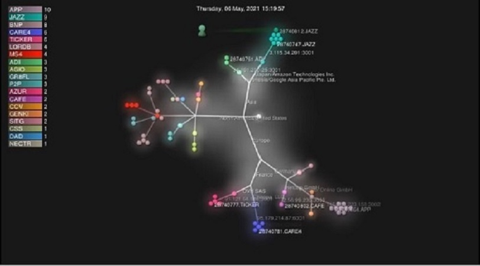

07 Jun 21
2

A descentralização Cardano continua: insights sobre nossa implantação P2P
A descentralização da rede Cardano é a chave para garantir sua sustentabilidade, resiliência e independência de longo prazo de entidades governamentais centralizadas.
Agora que a produção de blocos está totalmente descentralizada, nosso próximo foco é desenvolver nosso ecossistema descentralizado de operador de pool de participação (SPO) para construir conexões confiáveis e eficazes entre nós distribuídos.